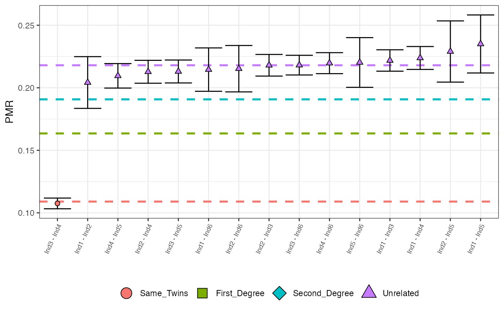

Plots all (sorted by increasing value) observed PMR values with maximum posterior probability classifications represented by colour and shape. Options include a cut off for the minimum number of overlapping SNPs, the max number of pairs to plot and x-axis font size.
Arguments
- in_tibble
a tibble that is the output of the callRelatedness() function.
- nsnps_cutoff
the minimum number of overlapping SNPs for which pairs are removed from the plot. If NULL, default is 500.
- N
the number of (sorted by increasing PMR) pairs to plot. Avoids plotting all pairs (many of which are unrelated).
- fntsize
the fontsize for the x-axis names.
Examples
relatedness_example
#> # A tibble: 15 × 13
#> row pair relat…¹ pmr sd misma…² nsnps ave_rel Same_Tw…³ First_D…⁴
#> <int> <chr> <fct> <dbl> <dbl> <dbl> <dbl> <dbl> <dbl> <dbl>
#> 1 1 Ind1 -… Unrela… 0.204 0.0103 310 1518 0.218 6.71e- 26 2.00e- 4
#> 2 2 Ind1 -… Unrela… 0.222 0.00428 2093 9435 0.218 1.22e-214 2.41e- 47
#> 3 3 Ind1 -… Unrela… 0.224 0.00458 1854 8283 0.218 2.00e-194 3.44e- 44
#> 4 4 Ind1 -… Unrela… 0.235 0.0116 314 1336 0.218 2.68e- 37 5.07e- 10
#> 5 5 Ind1 -… Unrela… 0.215 0.00867 481 2242 0.218 9.82e- 46 2.62e- 9
#> 6 6 Ind2 -… Unrela… 0.218 0.00432 1988 9119 0.218 5.06e-195 1.97e- 40
#> 7 7 Ind2 -… Unrela… 0.213 0.00458 1699 7984 0.218 4.95e-156 3.85e- 29
#> 8 8 Ind2 -… Unrela… 0.229 0.0122 270 1179 0.218 1.80e- 30 7.62e- 8
#> 9 9 Ind2 -… Unrela… 0.215 0.00927 423 1965 0.218 1.10e- 40 1.81e- 8
#> 10 10 Ind3 -… Same_T… 0.108 0.00214 2253 20952 0.218 1 e+ 0 1.39e-116
#> 11 11 Ind3 -… Unrela… 0.213 0.00458 1703 7994 0.218 6.83e-157 1.84e- 29
#> 12 12 Ind3 -… Unrela… 0.218 0.00394 2398 10994 0.218 2.05e-235 8.68e- 49
#> 13 13 Ind4 -… Unrela… 0.210 0.00489 1451 6924 0.218 1.92e-127 5.79e- 22
#> 14 14 Ind4 -… Unrela… 0.220 0.00419 2141 9745 0.218 2.95e-214 1.08e- 45
#> 15 15 Ind5 -… Unrela… 0.220 0.00994 383 1739 0.218 3.64e- 39 6.79e- 9
#> # … with 3 more variables: Second_Degree <dbl>, Unrelated <dbl>, BF <chr>, and
#> # abbreviated variable names ¹relationship, ²mismatch, ³Same_Twins,
#> # ⁴First_Degree
plotLOAF(relatedness_example)
#> No minimum number of overlapping SNPs given.
#> Using default minimum of 500.
#> No upper limit on number of pairs to plot given.
#> Plotting first 15 pairs.
